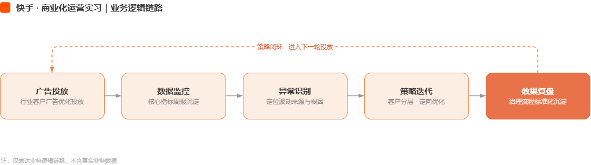

快手 · 商业化运营实习
商业化运营组 · 6个月业务背景
商业化变现团队负责广告产品营收；实习期间参与广告主投放策略优化与客户分层运营。
我的职责
负责行业客户数据分析、为客情指标退货率负责与周报沉淀，协同产品与销售推进策略落地。
-6pp
退货率
退货率治理标准化流程上线，客户整体退货率明显下降
+27%
活跃素材
活跃素材掉量严重，找准根源，解决问题，推进解决后成为复用机制
Python自动脚本
对外行业分析周报，AI辅助Python自动化工具流，提升工作效率
